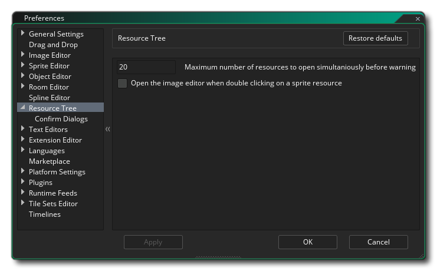
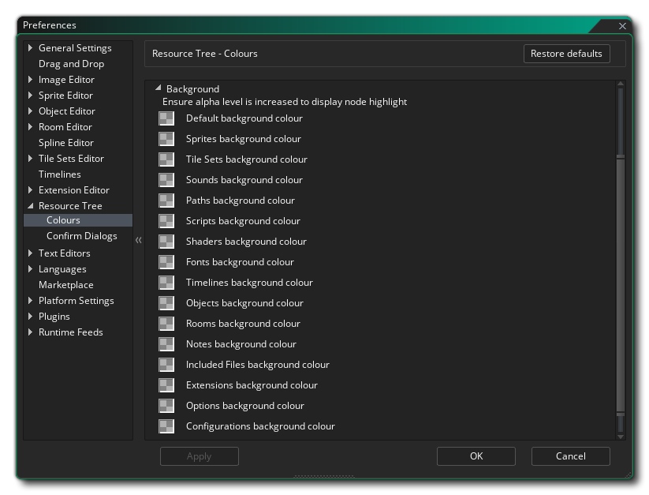
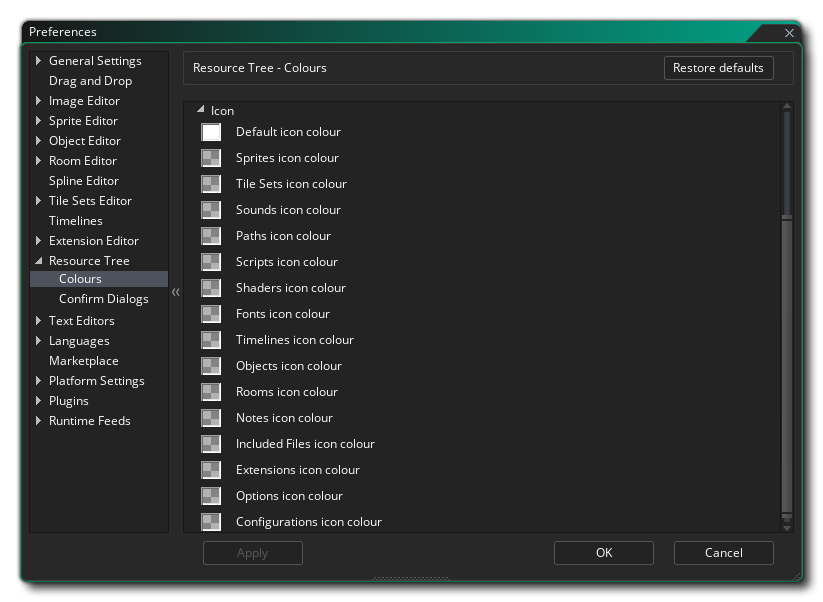
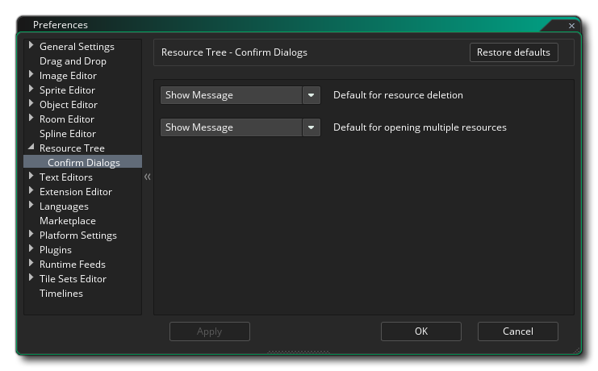

The Resource Tree Preferences are used to define certain properties for how the resource tree and its elements function. The main options are:
- Maximum number of resources open simultaneously without
warning: You can select multiple resources for opening at a
time by using
 /
/ +
+  to
select them and then right clicking
to
select them and then right clicking  and
choosing open all. If you have selected more than the number
specified in this option, then you will be shown a warning, since
having too many resources open at one time can cause issues with
performance on lower end machines. The default value is 20.
and
choosing open all. If you have selected more than the number
specified in this option, then you will be shown a warning, since
having too many resources open at one time can cause issues with
performance on lower end machines. The default value is 20.
- Sprite double click opens image editor: By default
double clicking on any resource will open that
resource for editing, but often when dealing with sprites, after
the initial setup when you create the new resource, you open it to
edit the image rather than the sprite properties. Selecting this
option will open the image editor for the sprite resource instead
of the sprite resource itself. You can still open the sprite editor
by right clicking and selecting Open
Properties. This option is off by default.
- Object double click opens all object events: By default
double clicking on any resource will open that
resource for editing, but often when dealing with objects, after
the initial setup when you create the new resource, you open it to
edit the events only rather than the object properties. Selecting
this option will open the different object events in a new
workspace, with each event being given its own tab within the new
workspace. You can still open the object editor by right clicking
and selecting Open
Properties. This option is off by default.
- Resource font can scale below 100%: When you select this option and then change the resource item size scale, then you can force GameMaker Studio 2 to reduce the text size as well as the icon size for items in the resource tree when set to less than 100%. By default this is off and resource tree text will only scale up not down.
- Resource font can scale above 100%: When you select this option and then change the resource item size scale, then you can force GameMaker Studio 2 to increase the text size as well as the icon size for items in the resource tree when set to greater than 100%. By default this is on and resource tree text will scale up.
- Default zoom (%): This sets the default zoom percentage for the resource tree when you start a new project. The default value is 100%.
- Minimum zoom (%): This sets the minimum zoom value permitted for the resource tree. Default is 50%.
- Maximum zoom (%): This sets the maximum zoom value permitted for the resource tree. Default is 250%.
- Show horizontal separators: Here you can enable/disable the horizontal separators between different asset types in the resource tree. This is checked by default to show the separators.

- Show tree lines: Here you can enable/disable the tree lines that are shown to the side of assets in the resource tree. This is checked by default to show the tree lines.

- Show group node icons: Enable or disable the icon representation of each resource type being displayed beside the resource name. This is off by default.
Here you can change the colour scheme used by GameMaker Studio 2 when showing the Resource Tree. This section is split into the three following groups:
- Background:  This section permits you to set the background colour for the main asset nodes in the Resource Tree. By clicking on any of them, you will open up the Colour Picker where you can choose the colour and alpha that is to be blended with the general IDE colour for the node. The default value of each is $FFFFFFFF.

- Icon:  This section permits you to set the colour and alpha for the folder icons used to denote the different resource tree asset types. The default value of each is $FFFFFFFF. Note that if you set the alpha value to 0, you will not see these icons.
- Label:
The "label" is the text is used to describe or name the node or item in the resource tree, and here you can change the colour of the text as well as the font and styling to be used for it. You should first change the Default settings to create a base for all the resource tree nodes, and then go on to edit individual node label settings as required (note that they will all have "Use Default" selected to start with).
- Miscellaneous Options:
These options affect certain global colour properties for the resource tree:
- Horizontal separator colour: The colour of the bar that separates each discreet resource type in the tree. Default colour is $3E3E3EFF.
- Tree line colour: The colour that will be used to draw the tree lines between different resource nodes. Default colour is $666666FF.
- Node selection highlight: This is the colour that will be used to highlight any selected nodes within the resource tree. Default colour is $039D5BFF.
Here you can select the behaviour of the confirmation dialogues when working with a resource from the resource tree. The available options are:
- Automatic response to resource deletion: When you delete a resource from the resource tree you normally get a warning asking if you are sure you want to proceed. By setting this option to "OK" the message will be suppressed as if you had clicked the "OK" button to proceed. The default value is "Show Message".
- Automatic response to opening multiple resources: As mentioned above in the general Resource Tree preferences, when you open multiple resources at once from the resource tree, you can get a warning if the number exceeds the number specified. By setting this option to "OK" the warning will be suppressed as if you had clicked the "OK" button to proceed. The default value is "Show Message".
- Automatic response to setting a room parent via node drag: When you drag a room over another room in the resource tree and then release it, you will be shown a message asking if you wish to make the room a "child" of the room being dropped on. By setting this option to "OK" the warning will be suppressed as if you had clicked the "OK" button to proceed. The default value is "Show Message".
- Automatic response to deleting custom views: When you have created a custom Resource Tree view and then choose to delete it, you will be shown a message asking if you wish to continue and remove the view. By setting this option to "OK" the warning will be suppressed as if you had clicked the "OK" button to proceed. The default value is "Show Message".
- Automatic response to DnD™ conversion to GameMaker Language: When you select the option to convert a DnD™ node to GML, you will be prompted to confirm the change as this cannot be undone. By setting this option to "OK" the warning will be suppressed as if you had clicked the "OK" button to proceed. The default value is "Show Message".